Sou um profissional da área da engenharia eletrônica com mais de 15 anos de experiência, atuando em funções de hardware, aplicações, sistemas e de produção, atualmente em transição para uma carreira em funções de desenvolvimento de software.
Possuo uma longa experiência com desenvolvimento de circuitos eletrônicos, projeto de PCBs, layout customizado de CIs analógicos e de sinal misto, scripts de software (C/C++, Python, entre outros...), programação de firmware (MCUs, FPGAs), sistemas de teste de engenharia, liderança técnica e colaboração multidisciplinar em ambientes internacionais.
Recentemente, venho expandindo minha atuação para o desenvolvimento de software backend por meio de projetos práticos com JavaScript, TypeScript, Node.js, Express e PostgreSQL, aplicando boas práticas como programação orientada a objetos, arquitetura em camadas, APIs RESTful, modelagem de bancos de dados relacionais e clean code.
Ao longo da minha carreira, colaborei com uma startup inovadora, empresas nacionais líderes de mercado e multinacionais renomadas. Entre as minhas principais conquistas, destacam-se:
Atualmente busco oportunidades em desenvolvimento de software backend, mantendo-me aberto a posições que envolvam sistemas embarcados e equipes multidisciplinares de engenharia que combinem desenvolvimento de hardware e software.
Também ofereço meus serviços e habilidades para trabalhos em projetos freelance, de acordo com a disponibilidade do momento.
Com experiência nestas atividades, disponibilizo os seguintes serviços para a sua empresa ou projeto
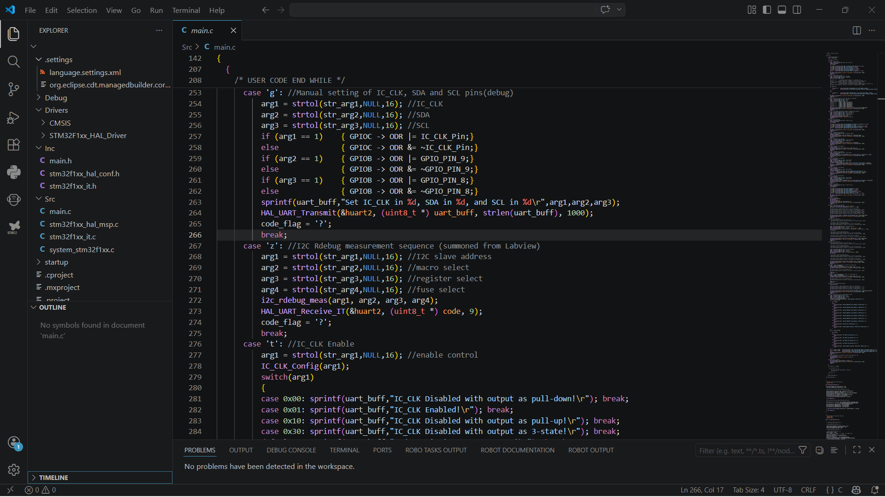
Codificação e depuração de programas voltados ao desenvolvimento de aplicações ou sistemas computacionais, atuando em Back-End através do uso das principais linguagens, plataformas e ferramentas disponíveis.
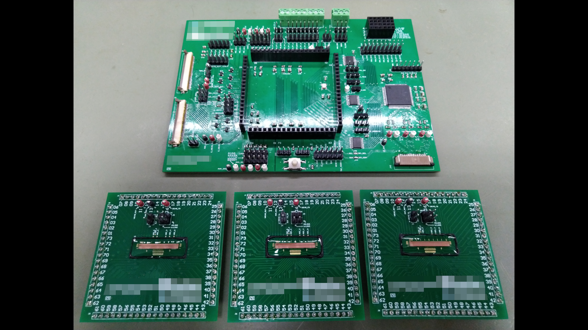
Projeto, esquemático, simulação e layout de placas eletrônicas para aplicações com circuitos analógicos, digitais e de potência, do conceito à produção.
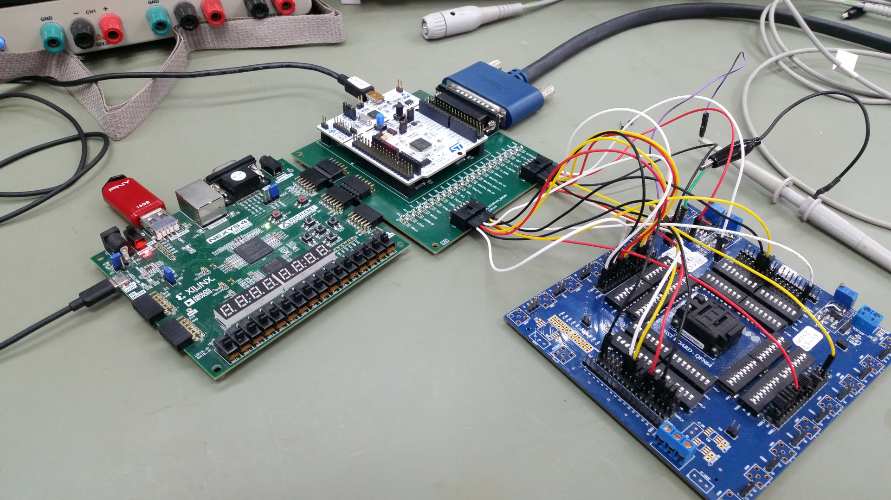
Desenvolvimento de Firmware e integração Hardware-Software para os principais Microcontroladores e FPGAs disponíveis no mercado para aplicações industriais e de IoT.
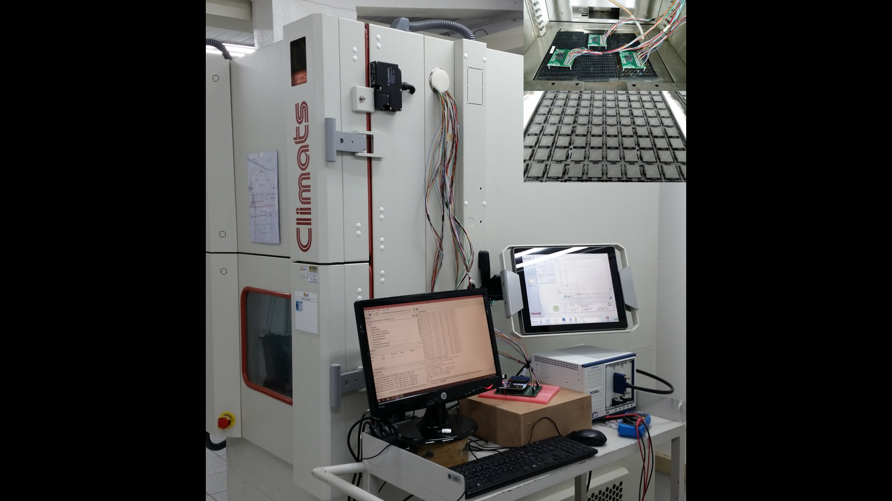
Planejamento, automação e execução de ensaios de bring-up, caracterização completa ou validação de produtos eletrônicos, incluindo ensaios climáticos, HALT, burn-in, pré-conformidade e acompanhamento de certificações.
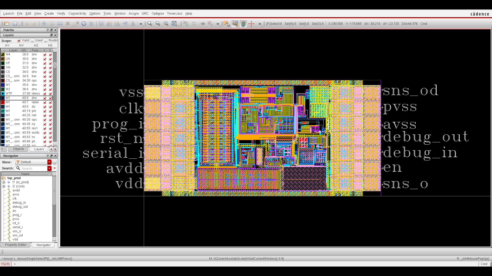
Desenvolvimento, verificação e extração de layouts para projetos de circuitos integrados analógicos e de sinais-mistos em nós tecnológicos maduros ou avançados.
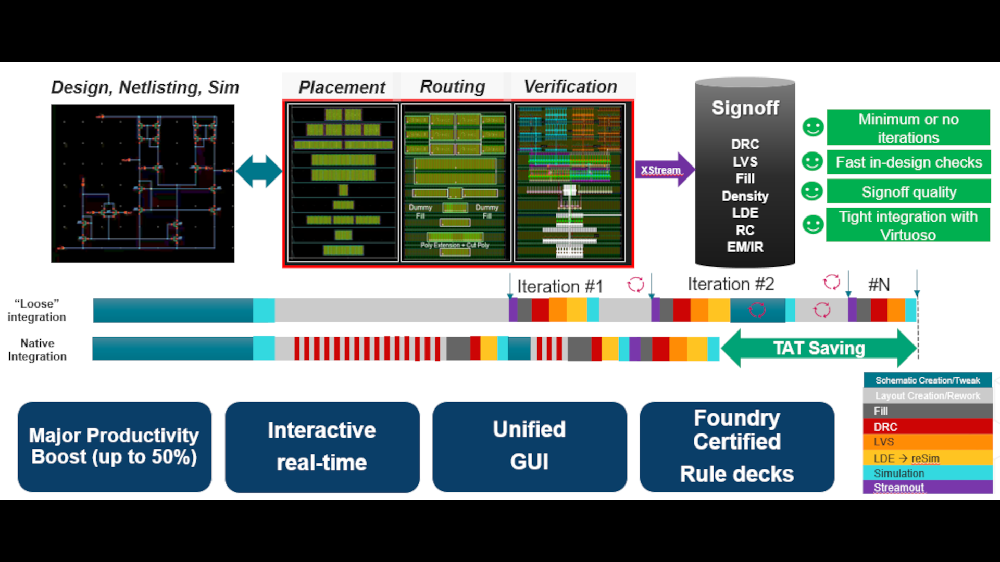
Apresentação, treinamento, mentoria e suporte especializado de produtos, soluções ou ferramentas de natureza eletrônica e tecnológica à empresas, clientes ou equipes de engenharia.
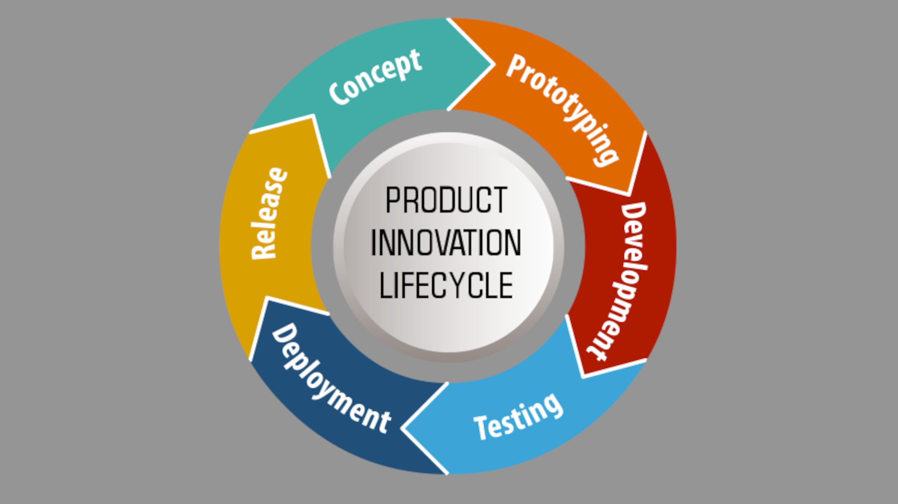
Definição de especificações técnicas, conformidade com normas industriais, gestão de documentação de produto, planejamento de testes e validação, alinhamento com as partes interessadas, fornecedores e equipes multi-disciplinares.
Alguns projetos ou produtos desenvolvidos recentemente, em colaboração com empresas ou de maneira independente
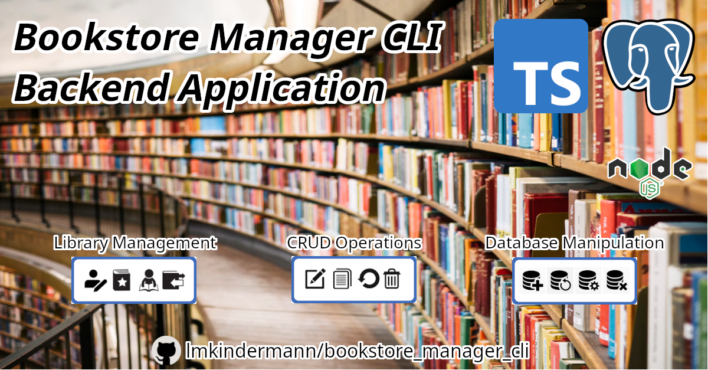
O BookStore Manager CLI é um sistema de gerenciamento de uma pequena livraria, permitindo informatizar o controle de autores, livros, clientes e empréstimos, através de uma aplicação executada via terminal. Utiliza o PostgreSQL como banco de dados para armazenamento permanente das informações.
Ver projeto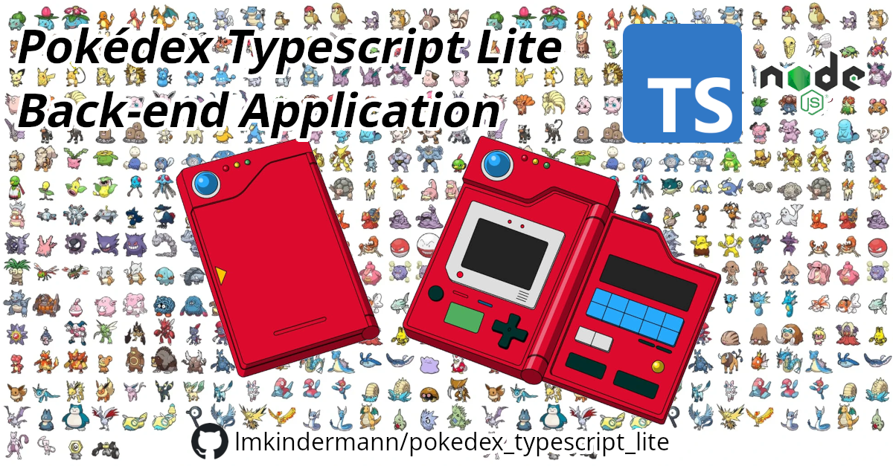
O Pokédex TypeScript Lite é uma aplicação simples em Node.js com TypeScript que consulta dados de Pokémon na PokeAPI e organiza alguns resultados em um catálogo local durante a execução do programa.
Ver projeto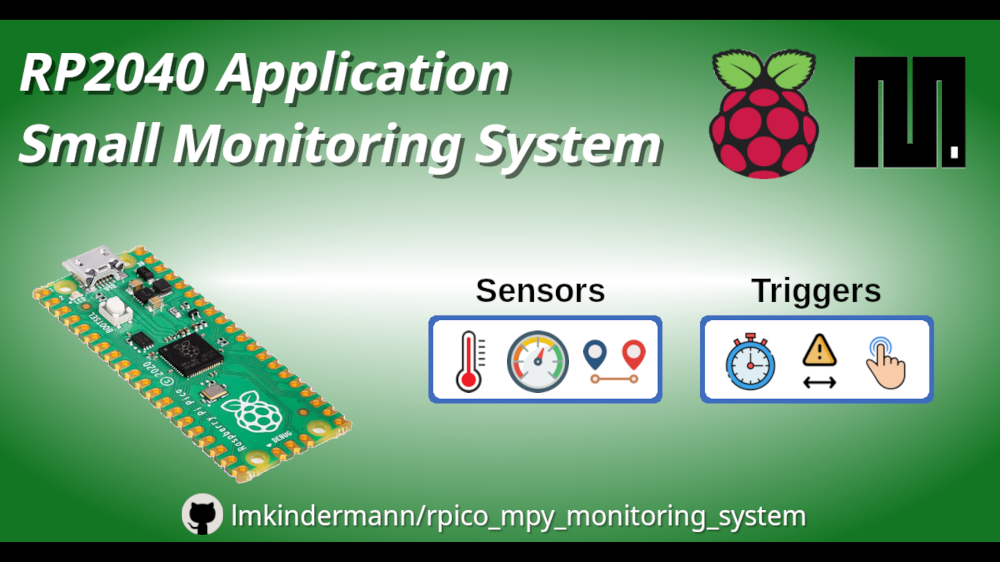
Aplicação didática para a placa Raspberry Pi Pico RP2040 utilizando a linguagem MicroPython, com monitoramento de grandezas físicas e transmissão de dados ao usuário.
Ver projeto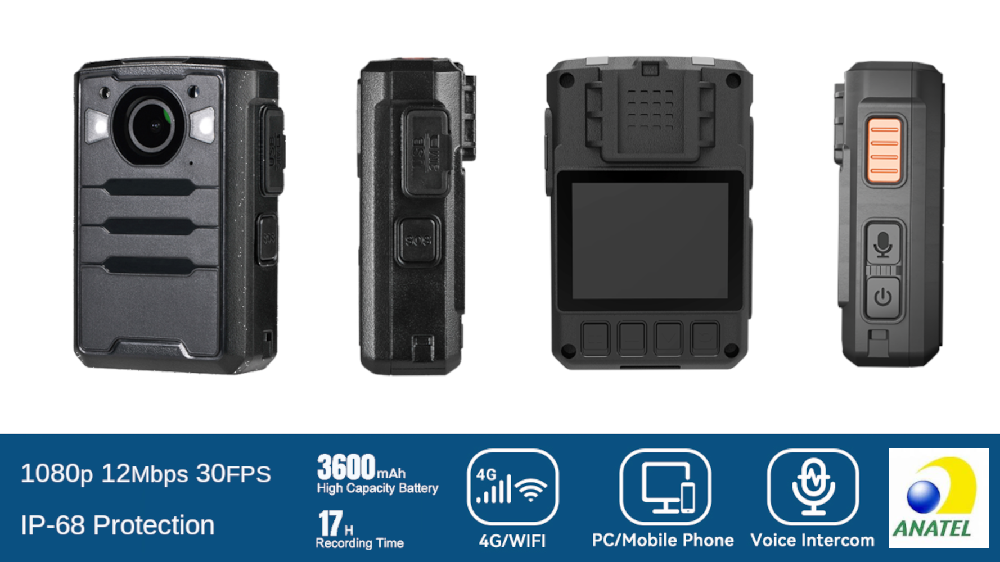
Produto OEM customizado, homologado e lançado para o mercado brasileiro, atuando em conjunto com fornecedores estrangeiros e equipes de desenvolvimento, logística, qualidade, aplicação e suporte.
Ver produto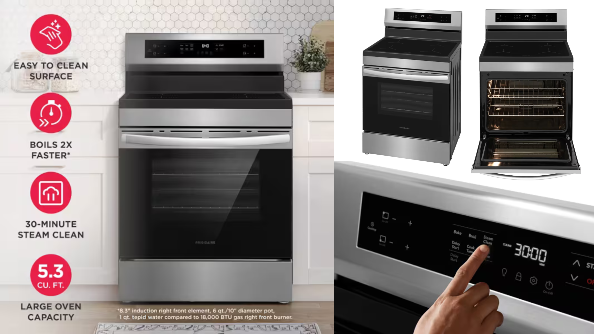
Sistema eletrônico integrado a uma linha de produtos lançada para o mercado norte-americano, atuando em conjunto com gestores, fornecedores e equipes multi-disciplinares em escala global.
Ver produtoPrincipais tecnologias, ferramentas e habilidades que utilizo para desenvolver soluções completas
Tem algum projeto em mente ou quer trocar uma ideia? Vamos inovar juntos!